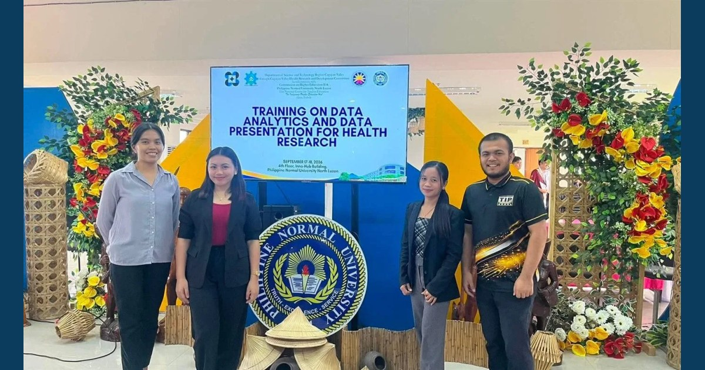

Strengthening Data Skills for Better Health Research

RDC staff from MCNP and ISAP participated in the Training on Data Analytics and Data Presentation for Health Research held on September 17–18, 2026, at Philippine Normal University–North Luzon. The training strengthened their skills in analyzing, interpreting, and effectively presenting health research findings.
Read full article